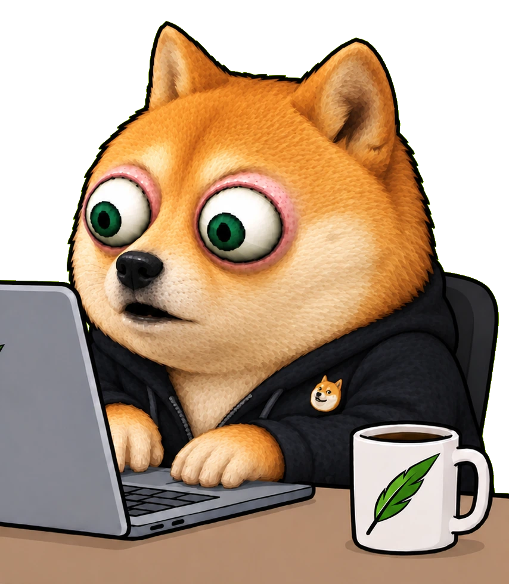
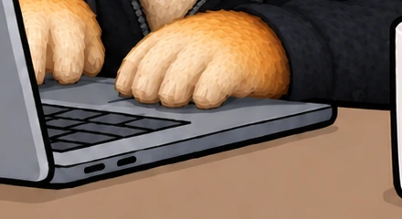
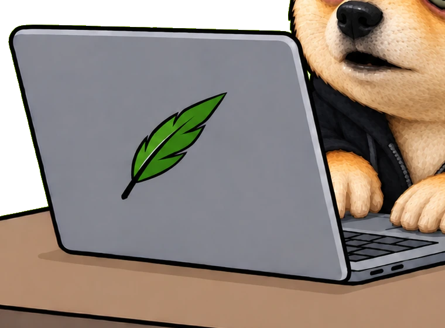
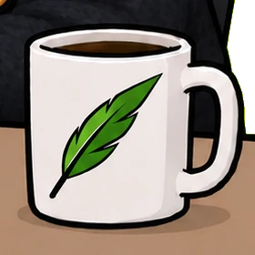
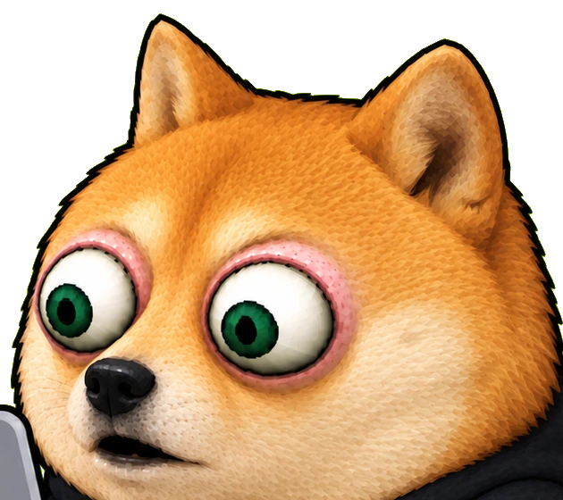

The laptop was not his. It belonged to the desk, and the desk belongs to somebody who is at work right now, and by the time anybody noticed, he had stood on the keyboard with all four feet and tipped the water bowl into the gap above the arrow keys.
He carried it into a small repair shop, signed the ticket with one paw and never went back for it, so everything on that drive is public property now. He did make a backup first, like a responsible dog, and then he buried it in the garden, and he is not going to pretend he remembers which hole.

twenty four holes · eight of them have a bone with a file on it
The bowl lives to the left of the desk and always has. On that particular afternoon it went into the keyboard, which he maintains was a coincidence, and the fan made a noise the whole street heard once and never again.

He carried it in with both front paws, put it on the counter, and pressed one paw into the ticket where the signature goes. They asked for a phone number. He gave them a long look and went home. That was eighteen months ago.

Before the shop, he did the responsible thing and copied everything onto a drive. Then he did the other responsible thing and buried it, at night, quickly, in the one part of the garden he was sure he would remember, and he was wrong about that part.

Fixed on the day he was chipped. No litter of extra tokens held back somewhere warm for a friend of the family.
Buried, and this time by somebody who wrote down where. The keys are gone and the hole has been filled in properly with the good soil.
Nothing on the buy, nothing on the sell, no fee for treats. Everything he takes he takes off the kitchen counter like a gentleman.
Mint and freeze revoked. He can dig up the lawn, the flowerbed and the neighbour's lawn, but he cannot dig up your bag.
Every bone is up, every file is public, and the garden looks like the surface of the moon. He would like it noted that he found all of them, eventually, and that the lawn was already like that.

Robinhood Chain · he is not saying · the ticket has a paw print on it